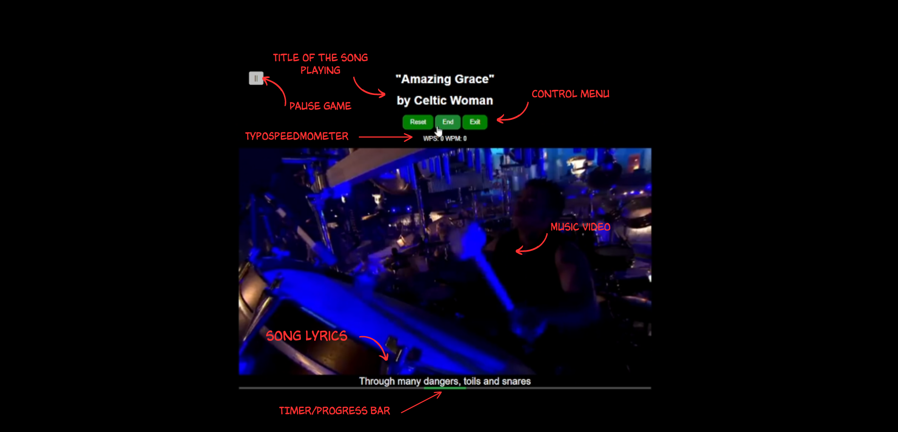

Game Instruction Manual
Game Instruction Manual

Getting Started
1. Select a Difficulty:
Practice: Easy songs to get you started.
Easy: Enjoy typing to "That's the Way It Is" from Red Dead Redemption 2.
Symphony: Challenge yourself with "Amazing Grace."
Insane: Test your skills with "Rap God" by Eminem.
2. Start the Game:
- Click the Start Game button to begin.
How to Play
1. Watch the Video:
- A video will play, displaying lyrics on the screen.
2. Type the Lyrics:
- As the lyrics appear, type them in the input area below the video.
- Try to match the lyrics as accurately as possible.
Controls
Play/Pause:Click the Play/Pause button to start or stop the video.
Restart: Click the Restart button to start the video from the beginning.
Exit: Click the Exit button to leave the game and start over.
Scoring
Correct Letters: Your correctly typed letters will be highlighted in green.
Incorrect Letters: Mistyped letters will be highlighted in red.
Scoreboard: At the end of the game, you'll see your total correct and incorrect letters, along with your score.
Tips
Focus: Pay attention to the lyrics as they appear and try to type them exactly.
Practice: Start with the practice mode to get comfortable with the game.
Improve: Challenge yourself with harder songs to improve your typing speed and accuracy.
Metrics
WPM (Words Per Minute): Track how many words you type per minute.
WPS (Words Per Second): Track how many words you type per second